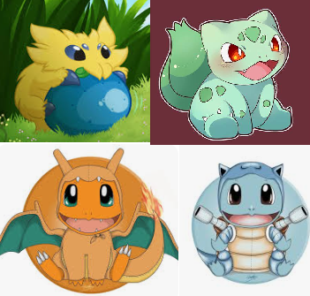

|  | the little yellow spider pokemon is known as Joltik.Joltik, the attaching pokemon,is a electric and bug type, this pokemon is usually found sucking electricity from yamper's hindquarters.The next pokemon is bulbasaur, the seed pokemon, a dual grass and poison type.The seed on it's back is filled with nutrients.The seed steadily grows largers as bulbasuar ages.Under Bulbasaur is Squirtle, the tiny turtle pokemon.This pokemon is a water type.Squirtle draws its long neck into its shell to launch incredibly powerful water attacks.The range and accuracy it can fire these shots can be quite impressive.The final pokemon is charmander, the lizard pokemon.The fire on its tail is a measure of its life, so when the fire is extinguished, charmander will die.
|